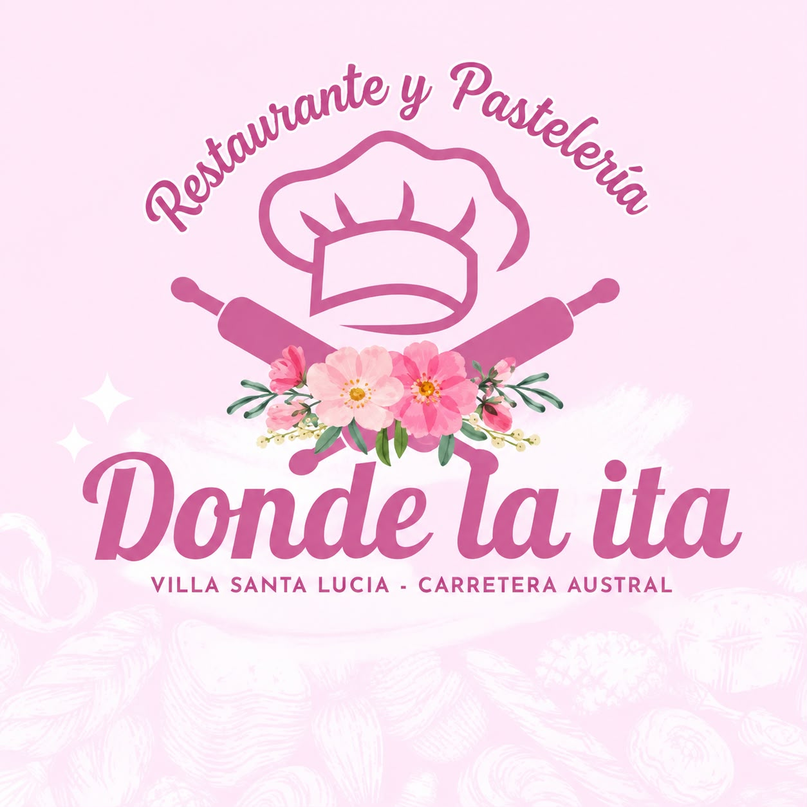

01 / RESTAURANTE
Una pausa
con buen sabor.
Ven a disfrutar de nuestra cocina en un ambiente cercano y acogedor.
Ven a visitarnosVilla Santa Lucía · Carretera Austral
Restaurante y pastelería en el corazón de Villa Santa Lucía. Una pausa sabrosa en tu camino por la Carretera Austral.

En Donde la Ita te espera un espacio acogedor para hacer una pausa, disfrutar algo rico y seguir descubriendo la Patagonia.
Un restaurante y pastelería para disfrutar durante tu visita a Villa Santa Lucía.
01 / RESTAURANTE
Ven a disfrutar de nuestra cocina en un ambiente cercano y acogedor.
Ven a visitarnos02 / PASTELERÍA
Date un gusto y acompaña tu visita con algo rico de nuestra pastelería.
Pasa por algo ricoHaz una parada en Donde la Ita mientras recorres la Carretera Austral. Será un gusto recibirte.
Un alto acogedor
en tu ruta por la Austral.